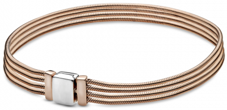
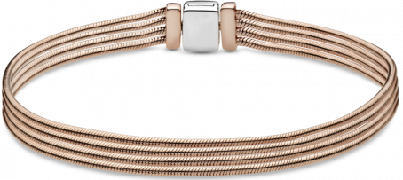
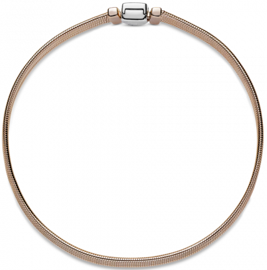

  
Описание
Браслет Reflexions Multi Snake, выполненный из ювелирного сплава золота и серебра, состоит из нескольких цепочек мягкого плетения.
Металл: Золото
Вставка: Без камня
Браслет Reflexions «Цепочки»
9 990 руб.